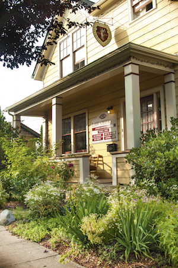

Call
Call Map
MapDUI, TRAFFIC & CRIMINAL DEFENSE
Experienced, Trusted, Local Attorney
Contact
Jefferson County Courthouse
1820 Jefferson StreetPort Townsend, WA 98368
get directions →
District Court (360) 385-9135
Superior Court (360) 385-9125

Port Townsend, WA 98368
get directions →
Our Law Office
624 Polk StreetPort Townsend, WA 98368
get directions →
Email attorney@ptdefense.com
Phone (360) 379-8906
Fax (360) 385-4012